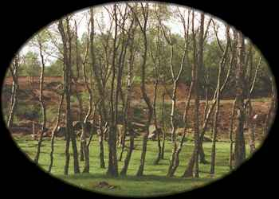
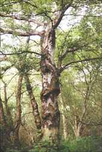
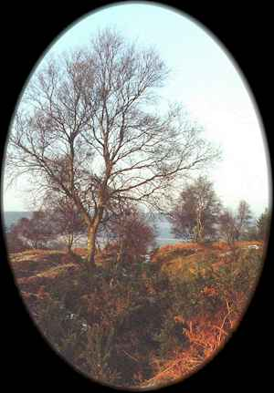

Beth
Birch (December 24 - January 20)

Birch - The silver birch (Betula pendula Roth) is the most common tree birch in much of Europe. It grows up to 100 feet high, but is

more often found in spreading clumps on sandy soils. It is one of the first trees to colonize an area after a mature forest is cut; this is probably a large part of its symbolic connection with new beginnings. It is cultivated in North America, often under the name of weeping birch. The three trees in my front yard form root sprouts that would take over the bed where they are planted if I didn't cut them back. The common birch (B. pubescens Ehrh.) is almost as widespread as the silver birch, but grows primarily on acid or peaty soils. It can reach 65 feet in height. Birches are members of the Birch family (Betulaceae). Curtis Clark